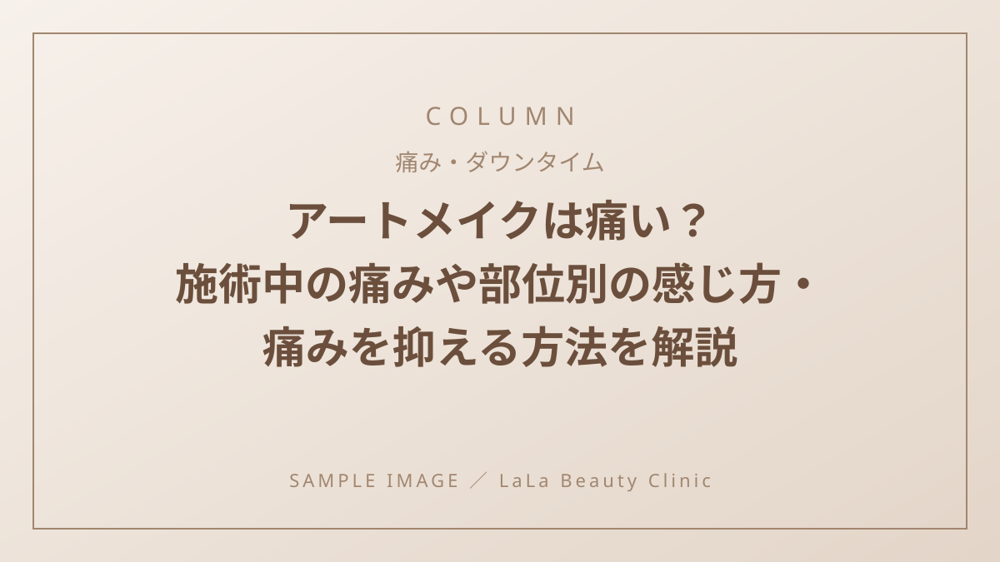

アートメイクは痛い？施術中の痛みや部位別の感じ方・痛みを抑える方法を解説

「アートメイクに興味があるけれど、痛そうで踏み出せない…」
そう不安に思っている方は少なくありません。アートメイクは皮膚の浅い層に針で色素を入れる施術のため、無痛ではありませんが、適切な麻酔を使用することで痛みを大幅に和らげることが可能です。
今回は、アートメイクの痛みの度合いや部位ごとの感じ方の違い、痛みを抑えるためのポイントを詳しく解説します。
アートメイクの痛みはどれくらい？
施術時は基本的に麻酔クリームを使用するため、我慢できないほどの強い痛みが続くケースは稀です。
例えるなら、「毛抜きで毛を抜かれるようなチクチク感」や「爪で皮膚をカリカリと引っかかれているような感覚」と表現されることが多く、施術中に眠ってしまう方もいるほどです。
【部位別】痛みの感じ方と特徴
アートメイクは施術する部位や皮膚の厚さによって、痛みの感じ方が異なります。
眉（眉毛）
皮膚が比較的厚いため、3部位の中では最も痛みを実感しにくいエリアです。チクチクとした軽い刺激を感じる程度で、麻酔がしっかり効いていればほとんど痛みを感じないケースも多くあります。
リップ（唇）
唇は皮膚が非常に薄く、神経が集中しているため痛みを感じやすい部位です。ピリピリとした刺激を感じやすいため、様子を見ながら丁寧な麻酔処理を行うことがポイントになります。
アイライン
粘膜に近いデリケートな部位のため、痛みというよりも「くすぐったい感覚」や「まぶたを引っ張られる感覚」を強く感じやすいのが特徴です。
施術中の痛みを最小限に抑える4つの対策
- 麻酔の効き具合を施術者に伝える
施術中に「少し痛みが増してきた」と感じたら、我慢せずに施術者へ伝えましょう。途中で麻酔を追加・調整してもらうことで、快適に施術を受けられます。 - 施術前日はしっかり睡眠をとる
寝不足や体調不良、ストレスが溜まっている状態は痛みに過敏になりやすくなります。前日は十分な睡眠をとって体調を整えておきましょう。 - 生理中の施術を避ける
生理前後や生理中はホルモンバランスの影響で肌がデリケートになり、普段より痛みを感じやすくなることがあります。気になる方は時期をずらして予約するのがおすすめです。 - 施術前後の保湿ケアを徹底する
肌が乾燥しているとバリア機能が低下し、刺激を感じやすくなります。普段から日頃の保湿ケアを意識しておくことが大切です。
不安や痛みを軽減するクリニック選びのポイント
痛みの感じ方には個人差があるからこそ、無理なく通える環境を選ぶことが大切です。
クリニック選びのチェックポイント
1回ごとの料金設定で様子を見ながら通えるか
セット契約の縛りがなく「1回ごとの料金設定（都度払い）」を採用しているクリニックなら、1回目の痛みの感じ方や定着具合を確認したうえで、ご自身のベストなタイミングで2回目以降を受けられます。
施術に関する不安をいつでも相談できるか
術後の痛みや赤み、ケア方法について疑問が生じた際、気軽に相談できる体制があるかも重要です。休診日を除いて基本的に無休で、営業時間内であればいつでも施術に関する悩みを相談できる医療機関を選ぶと、術前術後も安心して過ごせます。
まとめ：正しく痛みをケアして快適なアートメイクを
アートメイクの痛みは、麻酔の使用や体調管理、適切なクリニック選びによってしっかりコントロールできます。
痛みに不安がある方はカウンセリング時に遠慮なく相談し、無理のないペースで理想の素顔を手に入れましょう。